Implement Min Stack : O(2N) and O(N) Space Complexity
Problem Statement:
Design a stack that supports the following operations in constant time: push, pop, top, and retrieving the minimum element.
Implement the MinStack class:
MinStack(): Initializes the stack object.
void push(int val): Pushes the element val onto the stack.
void pop(): removes the element on the top of the stack.
int top(): gets the top element of the stack.
int getMin(): retrieves the minimum element in the stack.
Examples
Example 1: Input: ["MinStack", "push", "push", "push", "getMin", "pop", "top", "getMin"] [ [], [-2], [0], [-3], [ ], [ ], [ ], [ ] ] Output: [null, null, null, null, -3, null, 0, -2] Explanation: MinStack minStack = new MinStack(); - minStack.push(-2); - minStack.push(0); - minStack.push(-3); - minStack.getMin(); // returns -3 - minStack.pop(); - minStack.top(); // returns 0 - minStack.getMin(); // returns -2 Example 2: Input: ["MinStack", "push", "push", "getMin", "push", "pop", "getMin", "top"] [ [ ], [5], [1], [ ], [3], [ ], [ ], [ ] ] Output: [null, null, null, 1, null, null, 1, 1] Explanation: MinStack minStack = new MinStack(); - minStack.push(5); - minStack.push(1); - minStack.getMin(); // returns 1 - minStack.push(3); - minStack.pop(); - minStack.getMin(); // returns 1 - minStack.top(); // returns 1
Disclaimer: Here is the practice link to help you assess your knowledge better. It's highly recommend trying to solve it before looking at the solution.
Brute Force
Algorithm
- A stack of pairs is used, where each pair contains the element itself and the minimum element at the time the element was pushed onto the stack.
- The MinStack class is initialized with an empty stack.
- Push Operation:
- When a new element is pushed, it is compared with the current minimum.
- The new element and the updated minimum are stored as a pair and pushed onto the stack.
- Pop Operation:
- The top element (which is a pair) is removed from the stack.
- Top Operation:
- The top element of the stack is accessed to get the actual value (first component) stored in the pair.
- GetMin Operation:
- The second value of the pair at the top of the stack, which represents the minimum element at that point, is accessed.
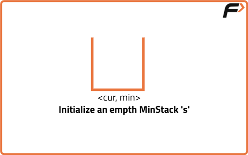
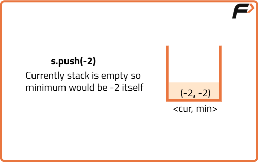
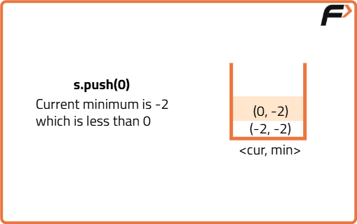
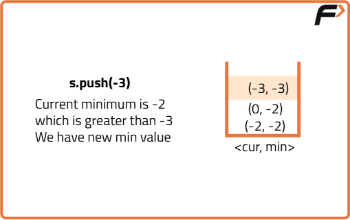
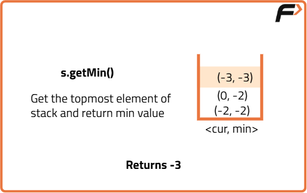
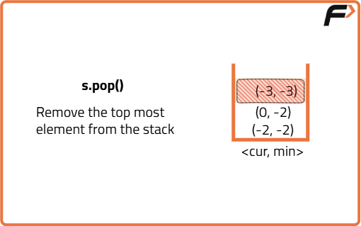
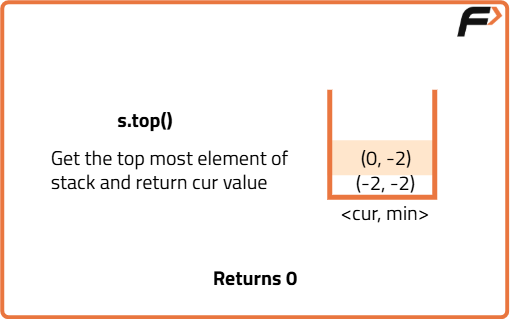
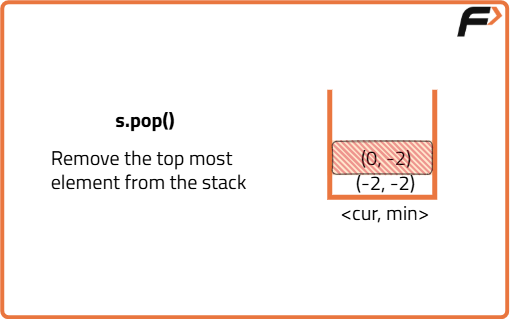
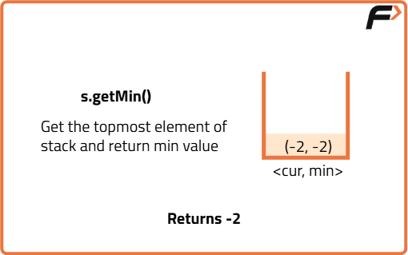
Code
#include <bits/stdc++.h>
using namespace std;
// Class to implement Minimum Stack
class MinStack {
private:
// Initialize a stack
stack <pair<int,int>> st;
public:
// Empty Constructor
MinStack() {
}
// Method to push a value in stack
void push(int value) {
// If stack is empty
if(st.empty()) {
// Push current value as minimum
st.push( {value, value} );
return;
}
// Update the current minimum
int mini = min(getMin(), value);
// Add the pair to the stack
st.push({value, mini});
}
// Method to pop a value from stack
void pop() {
// Using in-built pop method
st.pop();
}
// Method to get the top of stack
int top() {
// Return the top value
return st.top().first;
}
// Method to get the minimum in stack
int getMin() {
// Return the minimum
return st.top().second;
}
};
int main() {
MinStack s;
// Function calls
s.push(-2);
s.push(0);
s.push(-3);
cout << s.getMin() << " ";
s.pop();
cout << s.top() << " ";
s.pop();
cout << s.getMin();
return 0;
}Complexity Analysis
Time Complexity: O(1) for all operations (push, pop, top, getMin) as they involve constant time operations on the stack.
Space Complexity: O(n) where n is the number of elements in the stack, as we store pairs of values (element and minimum) in the stack.
Optimal Approach
Algorithm
- Use a stack to store elements and maintain a variable to keep track of the current minimum value.
- Push Operation:
- If the stack is empty, push the value and set it as the current minimum.
- If the value is greater than or equal to the current minimum, simply push the value onto the stack.
- If the value is less than the current minimum, push a modified value calculated using the new value and update the current minimum.
- Pop Operation:
- If the stack is empty, do nothing.
- Otherwise, retrieve and pop the top value from the stack.
- If the popped value indicates it was used to store a new minimum, update the current minimum using the retrieved value.
- Top Operation:
- If the stack is empty, return -1 indicating the stack is empty.
- Retrieve the top value. If it is greater than or equal to the current minimum, return it.
- If the top value indicates it was used to store a new minimum, return the current minimum.
- GetMin Operation:
- Simply return the current minimum.
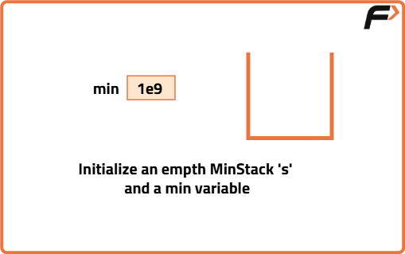
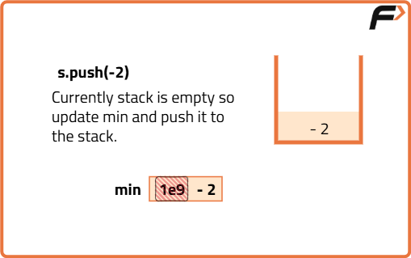
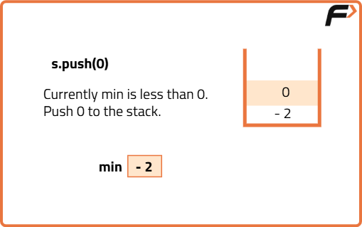
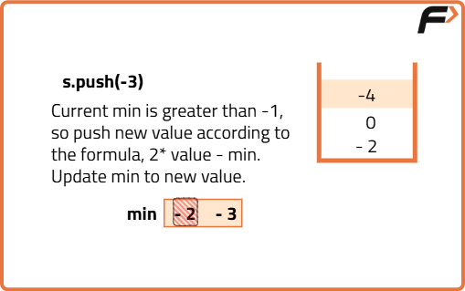
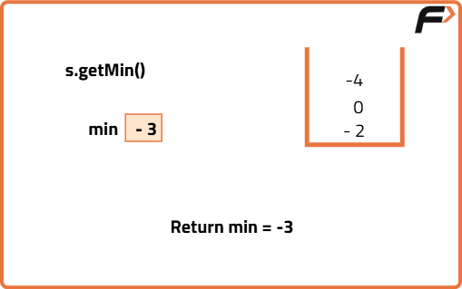
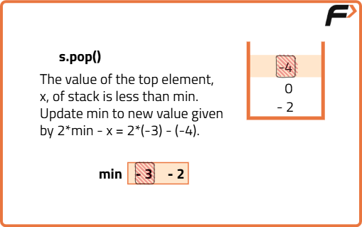
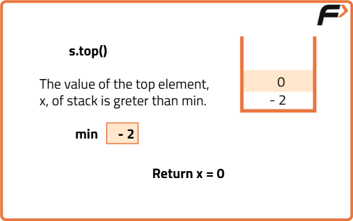
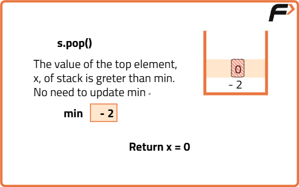
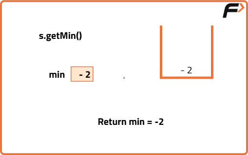
Code
#include <bits/stdc++.h>
using namespace std;
// Class to implement Minimum Stack
class MinStack {
private:
// Initialize a stack
stack <int> st;
// To store the minimum value
int mini;
public:
// Empty Constructor
MinStack() {
}
// Method to push a value in stack
void push(int value) {
// If stack is empty
if(st.empty()) {
//Update the minimum value
mini = value;
// Push current value as minimum
st.push( value );
return;
}
// If the value is greater than the minimum
if(value > mini) {
st.push(value);
}
else {
// Add the modified value to stack
st.push(2 * value - mini);
// Update the minimum
mini = value;
}
}
// Method to pop a value from stack
void pop() {
// Base case
if(st.empty()) return;
// Get the top
int x = st.top();
st.pop(); // Pop operation
// If the modified value was added to stack
if(x < mini) {
// Update the minimum
mini = 2 * mini - x;
}
}
// Method to get the top of stack
int top() {
// Base case
if(st.empty()) return -1;
// Get the top
int x = st.top();
// Returnn top if minimum is less than the top
if(mini < x) return x;
//Otherwise return mini
return mini;
}
// Method to get the minimum in stack
int getMin() {
// Return the minimum
return mini;
}
};
int main() {
MinStack s;
// Function calls
s.push(-2);
s.push(0);
s.push(-3);
cout << s.getMin() << " ";
s.pop();
cout << s.top() << " ";
s.pop();
cout << s.getMin();
return 0;
}Complexity Analysis
Time Complexity: O(1) for all operations (push, pop, top, getMin) as they involve constant time operations on the stack.
Space Complexity: O(n) where n is the number of elements in the stack, as we store pairs of values (element and minimum) in the stack.